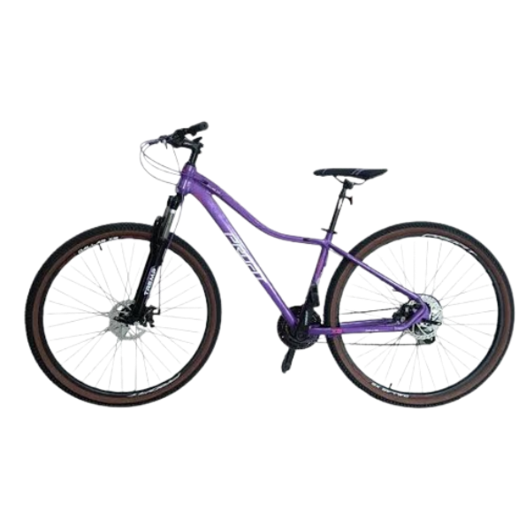
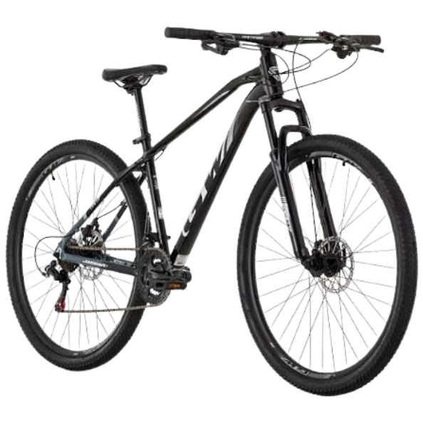

Casco y candado incluidos
En tu alquiler se incluyen casco y candado para acompañarte durante el recorrido; son parte del servicio, no necesitas alquilarlos aparte.
Asistencia en carretera
Ofrecemos asistencia en carretera si surge algún inconveniente durante tu recorrido; así cuentas con apoyo fuera del punto de alquiler.
Mantenimiento y reparación
Brindamos mantenimiento y reparación de bicicletas para atender sus necesidades mecánicas; el cuidado de la bicicleta también forma parte del servicio.
Alquiler de accesorios
Puedes complementar tu alquiler con accesorios para bicicletas; elige lo que necesites para tu recorrido.
Entrega y recogida
El servicio contempla la entrega y recogida de la bicicleta alquilada; una opción práctica para coordinar el inicio y el final del alquiler.
Aqui te dejamos unos ejemplos de nuestas bicicletas:

